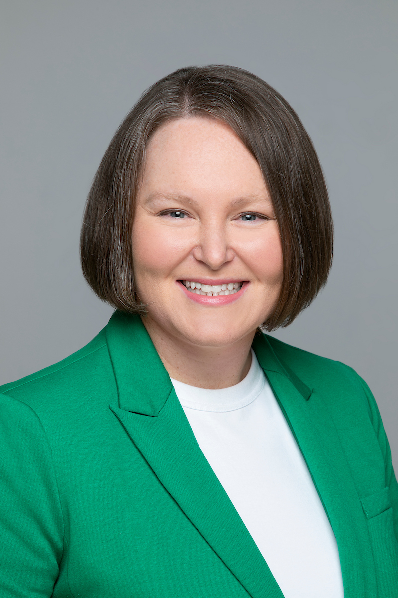
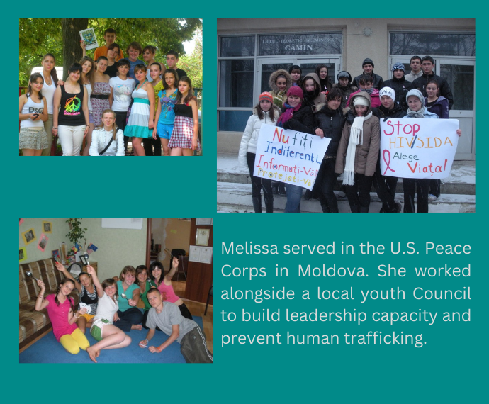

Melissa is a respected Redmond City Councilmember, energetic non-profit leader, and stepmom to a very cool young adult. You can usually find her at City Hall, holding office hours at the Redmond Library, or chatting with residents at a local coffee shop. Like many, Melissa was motivated to run for office by changes coming to her own neighborhood. Melissa and her family live in Overlake Village and can't wait to be connected to the rest of the region through light rail!
One of Melissa's core beliefs is that the City Council does its best work outside of City Hall. That's why she advocated for the Council to host its first ever meeting in Downtown Park. Government should go where the people are! Those community listening sessions are now quarterly opportunities for residents to gather with Council and will rotate to different neighborhoods throughout the city.
For the last decade, Melissa's professional work centered on improving the lives of children, youth, and families. She is a seasoned fund development director and loves making connections between our region's philanthropists and opportunities to change the world.
Melissa served in the U.S. Peace Corps as a Community and Organizational Development Advisor in Moldova. During her service, she worked with community leaders to strengthen youth development programs and with international NGOs to increase the reach of human trafficking prevention programs to rural areas of the country.
Melissa earned a Masters in Non-Profit Leadership from Seattle University and two Bachelors from Washington State University.
